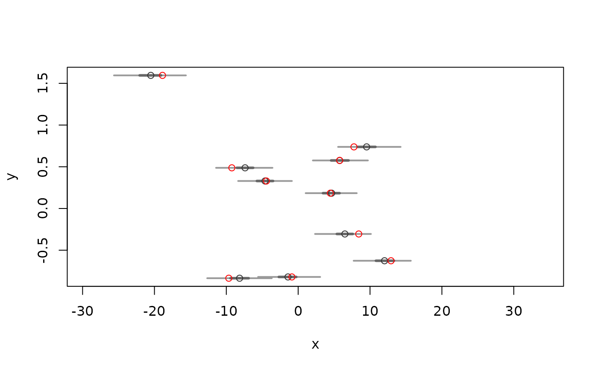

Performs predictions (in the form of rv objects) from models based on
given covariates.
rvpredict(object, ...)
# S3 method for lm
rvpredict(object, newdata, ...)An object representing a statistical model fit.
Arguments passed to and from other methods.
A data frame with new covariates to be used in the
predictions. The column names of the data frame must match those in the
model matrix (although order may be arbitrary). If omitted, the model
matrix is used instead; the resulting predictions are then the
replications of the data. Note: this can be an rv
object to incorporate extra uncertainty into predictions.
For the lm method, a vector as long as there are rows in the
data frame newdata.
The lm method generates predictions of the outcome variable. The
posterior coefficient estimates (the "intercept" and the "betas") are
estimated in a Bayesian framework by posterior(object); the
coefficients are multiplied by newdata (if omitted, the model
covariate matrix is used instead) to obtain the predicted model mean;
lastly, the outcomes are predicted from the Normal sampling model, taking
into account the sampling variability along with the uncertainty in the
estimation of the standard deviation (`sigma').
The covariate matrix newdata can be an rv, representing
additional uncertainty in the covariates.
## Create some fake data
n <- 10
## Some covariates
set.seed(1)
X <- data.frame(x1=rnorm(n, mean=0), x2=rpois(n, 10) - 10)
y.mean <- (1.0 + 2.0 * X$x1 + 3.0 * X$x2)
y <- rnorm(n, y.mean, sd=1.5) ## n random numbers
D <- cbind(data.frame(y=y), X)
## Regression model fit
obj <- lm(y ~ x1 + x2, data=D)
## Bayesian estimates
posterior(obj)
#> $beta
#> name mean sd 1% 2.5% 25% 50% 75% 97.5% 99% sims
#> [1] (Intercept) 0.88 0.57 -0.53 -0.29 0.55 0.88 1.2 2.0 2.3 1000
#> [2] x1 2.88 0.97 0.74 1.10 2.27 2.87 3.4 4.8 5.5 1000
#> [3] x2 3.24 0.22 2.64 2.80 3.11 3.23 3.4 3.7 3.8 1000
#>
#> $sigma
#> mean sd 1% 2.5% 25% 50% 75% 97.5% 99% sims
#> [1] 1.7 0.61 0.95 1 1.3 1.6 2 3.2 3.7 1000
#>
## Replications
y.rep <- rvpredict(obj)
## Predictions at the mean of the covariates
X.pred <- data.frame(x1=mean(X$x1), x2=mean(X$x2))
y.pred <- rvpredict(obj, newdata=X.pred)
## Plot predictions
plot(y.rep, D$x1)
points(D$y, D$x1, col="red")

## 'Perturb' (add uncertainty to) covariate x1
X.pred2 <- X
X.pred2$x1 <- rnorm(n=n, mean=X.pred2$x1, sd=sd(X.pred2$x1))
y.pred2 <- rvpredict(obj, newdata=X.pred2)